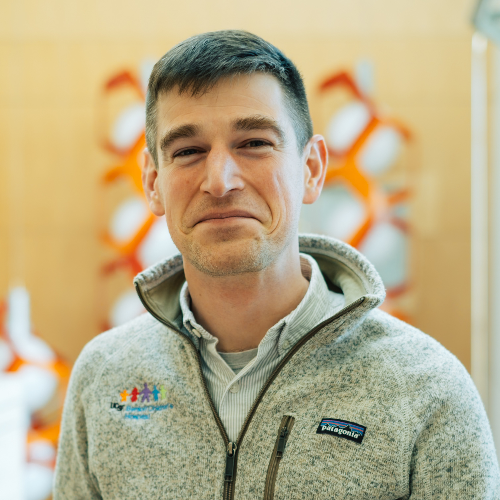

philip.pauerstein ucsf.edu
Clinical Fellow in Pediatric Hematology, Oncology, and BMT

2026-Present
2024-2026
2021-2024
2017-2020
2008-2017
2004-2008
Cell therapies for pediatric malignancies and immune dysregulatory disorders.
ASH Fellow Scholar Award (2026-2028)
Damon Runyon-St. Jude's Fellowship (2024-2028)
St. Baldrick's Foundation Fellowship (2024-2026))
Resident Teaching Award, Department of Pediatrics (2018)
NIH F30 Individual National Research Service Award for M.D./Ph.D. Training, NIDDK (2014-2017)
Howard Hughes Medical Institute Medical Fellows research fellowship (2010-2011)
Dvorak CC, Cho S, Salinas Cisneros G, Higham CS, Chu J, Winestone LE, Temple WC, Kharbanda S, Shimano KA, Avagyan S, Pauerstein PT, Huang JN, Cheng G, Lalefar N, Aguayo-Hiraldo P, Keizer RJ, Pulsipher MA, Long-Boyle JR. High Melphalan Exposure Increases the Risk of Graft-versus-Host Disease in Pediatric Patients Undergoing Alpha-Beta T-Cell Depleted Haploidentical Transplantation. Transplant Cell Ther. 2025. Online ahead of print. PMID: 40185404.
Dvorak CC, Temple WC, Cisneros GS, Chu J, Winestone LE, Higham CS, Shimano KA, Kharbanda S, Avagyan S, Pauerstein PT, Huang JN, Cheng G, Waters E, Winger BA, Cowan MJ, Long-Boyle JR. Younger Children with Non-Malignant Disease Have Increased Incidence of Mixed Myeloid Chimerism After Allogeneic Hematopoietic Cell Transplantation with Busulfan-Based Conditioning. Transplant Cell Ther. 2025 Feb 10:S2666-6367(25)01010-3. doi: 10.1016/j.jtct.2025.02.002. Epub ahead of print. PMID: 39938805.
Reddy NR, Maachi H, Xiao Y, Simic MS, Yu W, Tonai Y, Cabanillas DA, Serrano-Wu E, Pauerstein PT, Tamaki W, Allen GM, Parent AV, Hebrok M, Lim WA. Engineering synthetic suppressor T cells that execute locally targeted immunoprotective programs. Science. 2024 Dec 6;386(6726):eadl4793. doi: 10.1126/science.adl4793. Epub 2024 Dec 6. PMID: 39636990.
Duvall E, Benitez C, Tellez K, Enge M, Pauerstein PT, Li L, Baek S, Quake S, Smith JP, Sheffield NC, Hager G, Kim SK, Arda HE (2022). Single-cell transcriptome and accessible chromatin dynamics during endocrine pancreas development. PNAS.
Pauerstein PT, Tellez K, Willmarth KB, Park KM, Hsueh B, Arda HE, Gu X, Aghajanian H, Epstein JA, Deisseroth K, Kim SK. (2017). A radial axis defined by Semaphorin to Neuropilin signaling controls pancreatic islet morphogenesis. Development.
Hsueh B, Burns V, Pauerstein PT, Holzem K, Ye L, Engberg K, Wang A, Gu X, Chakravarthy H, Arda HE, Charville G, Vogel H, Efimov I, Kim SK, Deisseroth K. (2017). Pathways to clinical CLARITY: methodologies for transparent-volume quantitative analysis of irregular, soft, and heterogeneous tissues in development and disease. Scientific Reports.
Pauerstein PT*, Park KM*, Peiris HS, Wang J, and Kim SK (2016). Research Resource: Genetic Labeling of Human Islet Alpha Cells. Mol. Endocrinol. 30, 248–253.
Pauerstein PT, Sugiyama T, Stanley SE, McLean GW, Wang J, Martín MG, and Kim SK (2015). Dissecting human gene functions regulating islet development with targeted gene transduction. Diabetes.
Benitez CM, Qu K, Sugiyama T, Pauerstein PT, Liu Y, Tsai J, Gu X, Ghodasara A, Arda HE, Zhang J, et al. (2014). An Integrated Cell Purification and Genomics Strategy Reveals Multiple Regulators of Pancreas Development. PLoS Genet 10, e1004645.
Dalle Nogare DN, Pauerstein PT, Lane ME, G2 Acquisition by Transcription-Independent Mechanism at the Zebrafish Midblastula Transition, Developmental Biology 326 (2009).
McCollum CM, Amin SR, Pauerstein PT, Lane ME, A zebrafish LMO4 ortholog limits the size of the forebrain and eyes through negative regulation of six3b and rx3, Developmental Biology 309 (2007).